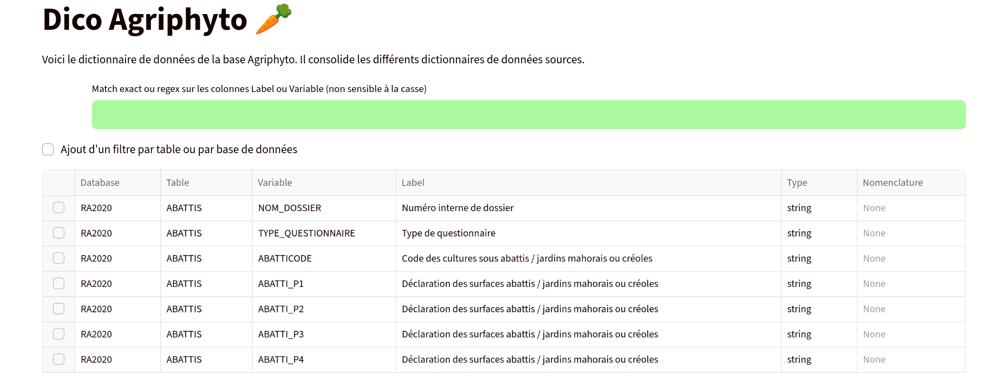

agriphyto-schema#


Description#
Objectif du projet : Disposer d’un schéma de données standardisé et d’une visualisation ergonomique du dictionnaire de données pour les données de la base Agrophyto.
Livrables : schéma de données (standard pandera) et application du dictionnaire.
Public visé : utilisateurs de la base Agrophyto.
Acteurs impliqués : D2E, Insee.
Temporalité du projet : octobre 2025 pour le prototype.

Liens utiles#
Documentation : https://straymat.github.io/agrophyto-schema/readme.html
Code source : https://github.com/straymat/agrophyto-schema
Contexte technique#
Données utilisées#
Bases de données composant Agriphyto. Seuls les dictionnaires des dernières années pour chaque base sont intégrés dans ce projet.
Si une documentation propre est disponible sur le CASD, l’id_prod de la dernière édition disponible est indiqué. Il faut ensuite visiter la page : https://www.casd.eu/page-produit/?id_prd={id_prod}. Une version consolidée du dictionnaire est disponible en téléchargement.
Sigle |
Nom |
Année |
CASD id_prod |
choix fichier source nomenclature |
intégrée |
|---|---|---|---|---|---|
PKGC |
Pratiques Culturales Grandes Cultures |
2006, 2011, 2017 |
3033 |
20190802_DOC_BSVA_dico_variables_PKGC2017.ods |
|
PKPrairies |
Pratiques Culturales Prairies (regroupées dans Grandes Cultures à partir de 2017) |
2006, 2011 |
1158 |
Pratiques_culturales_en_prairie_-_2011.csv |
✅ |
PKfruits |
Pratiques Culturales Fruits (aussi nommé PKArbo) |
2015 |
2597 |
20210726_PKfruits2015_dico_variables.ods |
✅ |
PKLEG |
Pratiques Culturales Légumes |
2013 |
1393 |
PKLEG13_DESC.ods |
✅ |
PhytoViti |
Phytosanitaires Viticulture |
2010, 2016 |
2609 |
Pratiques_phytosanitaires_en_viticulture_-_2016.csv |
✅ |
PKViti |
Pratiques Culturales Viticulture |
2006, 2014, 2019 |
4173 |
PKViti2019_dico_variables_definitif.ods |
|
PhytoGC |
Phytosanitaires Grandes Cultures |
2014 |
1639 |
Pratiques_phytosanitaires_en_grandes_cultures_-_2014.csv |
✅ |
Phytoleg |
Phytosanitaires Légumes |
2018 |
3836 |
20210930_DOC_BSVA_Dictionnaire_variables_Phytolégumes2018.ods |
|
Phytofruits |
Phytosanitaires Fruits |
2012, 2018 |
3945 |
Phytofruits18_dico_variables_casd.xlsx |
|
RA |
Recensement Agricole |
2000, 2010, 2020 |
4411 |
RA2020_Dictionnaire des variables_220415_CASD.xlsx |
✅ |
Fideli |
Fideli |
2018-2023 |
5169 |
Fichier_Démographique_sur_les_Logements_et_les_Individus_(FIDELI)_-_2022.csv |
✅ |
BTS |
Base tous salariés |
2016-2023 |
5012 |
||
BNS |
Base non salariés |
2006-2023 |
4848 |
Schéma flux de données (optionnel)#
Technologies#
python 3.13, pandera, streamlit
Maintenance#
Projet en développement actif
Contacts#
D2E, division RPS ou macro : matthieu.doutreligne@insee.fr
Détails techniques#
Se référer à la documentation en ligne : https://straymat.github.io/agrophyto-schema/readme.html